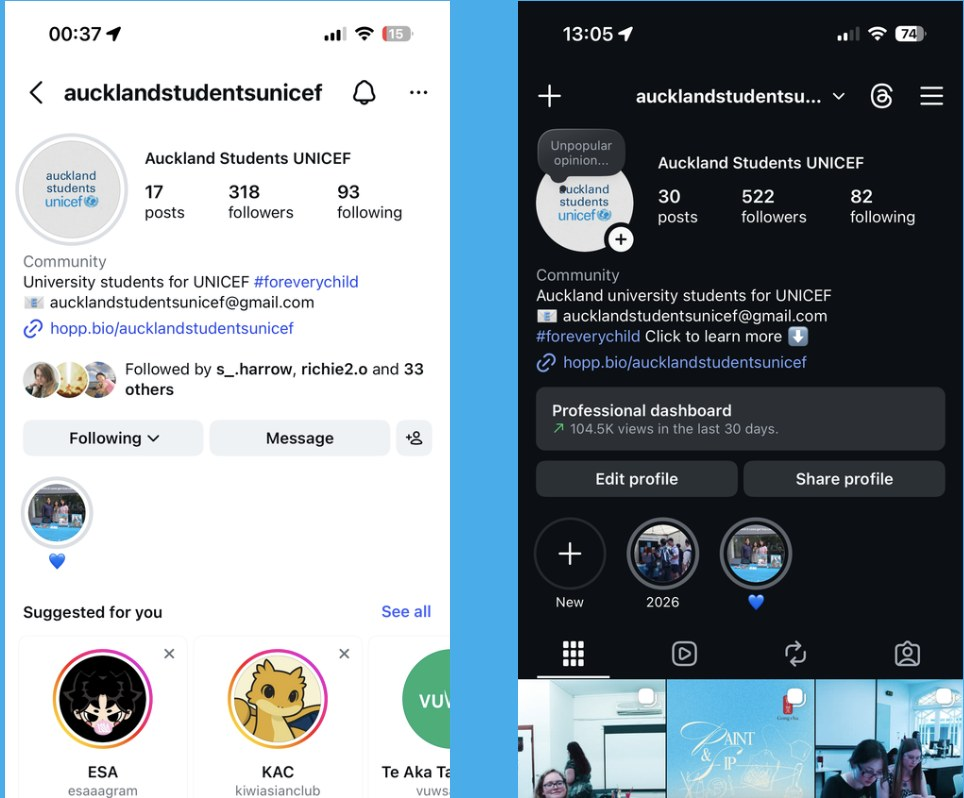

PAKURANGA UNITED RUGBY CLUB
Content Intern, 2026
I created and managed digital content across the club’s social platforms, covering club achievements, player pathways and the national championship success. I shot match-day and training photo and video of high-performance athletes.
